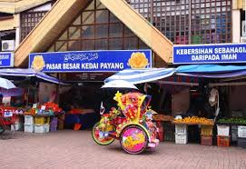
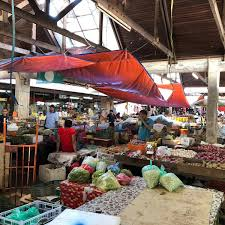
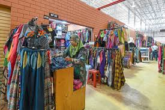

Pasar Payang
Tour Detail
Location:Jalan Sultan Zainal Abidin, Kampung Tanjung Kapur, 20200 Kuala Terengganu, Terengganu
Operation Time: 07:00a.m – 06:00p.m
Operation Time: 07:00a.m – 06:00p.m
Description
Pasar Payang, situated in the heart of Kuala Terengganu, Malaysia, is a vibrant and bustling traditional market that encapsulates the essence of Terengganu's culture and heritage. This iconic market has been a focal point of the city for generations, attracting locals and tourists alike with its colorful array of goods and lively atmosphere.At Pasar Payang, visitors can immerse themselves in a sensory experience, exploring rows of stalls offering a diverse selection of goods, including traditional Malay textiles (such as batik and songket), handicrafts, local delicacies, fresh produce, and souvenirs. The market is renowned for its intricate handwoven fabrics, intricate embroidery, and beautifully crafted traditional items, making it a paradise for shoppers looking for unique cultural treasures.
Beyond shopping, Pasar Payang is also a culinary haven, where visitors can sample a wide range of delicious Malay dishes and snacks, from savory treats like nasi lemak and satay to sweet delicacies like kuih (traditional cakes) and coconut-based desserts.
The market's lively ambiance, with vendors calling out their wares and shoppers haggling for the best deals, offers a glimpse into the everyday life and traditions of Terengganu. Whether you're searching for authentic local handicrafts, sampling traditional cuisine, or simply soaking up the vibrant atmosphere, Pasar Payang is a must-visit destination for anyone looking to experience the cultural richness of Terengganu.
Gallery


